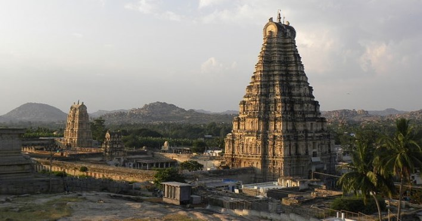
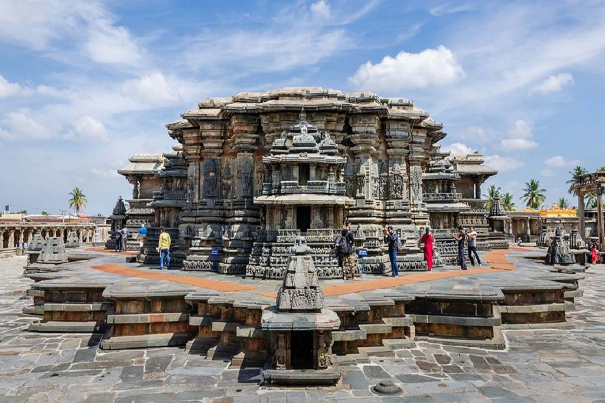
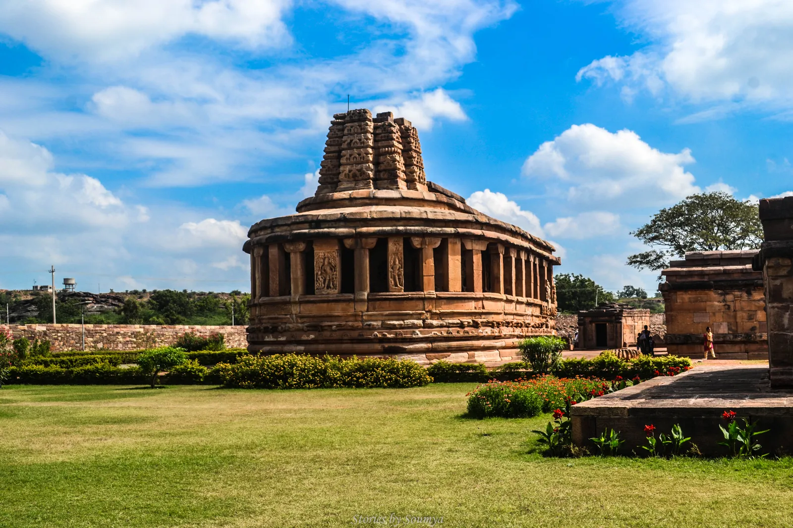
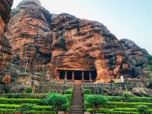

HISTORIC KARNATAKA
ONE STATE MANY WORLDS
Embarking on a heritage tour of Karnataka is a captivating journey through time, unveiling the state's rich cultural legacy and architectural splendors. This South Indian state boasts a plethora of historical sites that offer a glimpse into its glorious past. Moving to Mysuru, the magnificent Mysore Palace enchants visitors with its grandeur, while the Jaganmohan Palace showcases remarkable art collections. The UNESCO World Heritage Site of Hampi leaves travelers in awe with its sprawling ruins, including the Virupaksha Temple and the iconic Vittala Temple.
PLACES OF INTEREST
 MYSORE PALACE |
 HAMPI |
 VIRUPAKSHA TEMPLE |
|  BELUR |
 AIHOLE |
 BADAMI CAVES |
ITINERARY
3 Days/2 Night₹5000 per head
DAY 1
Have your breakfast and move ahead for touring to Mysore. Visit the Chamundi Hills,Mysore Palace , Brindavan Gardens, Mysore Lake, Mysore Amusement,Mysore Zoo and St.Philomena's Church.
DAY 2
On day two,visit to Hampi.The famous stone chariot that is on most pictures of Hampi is in the beautiful Vittala temple.The large statue of Narasimha in Hampi is among the largest in Karnataka.Followed by The Lotus mahal and Queens bath.
DAY 3
On day three,we first visit Shravanabelagola.After Shravanabelagola, we head to Lakshmi Devi Temple.Next we reach to Belur Chana Keshava Temple. The magnificent soap stone carvings is like nothing you have seen before.We end the trip with Halebeedu which was the old capital of the Hoysalas.